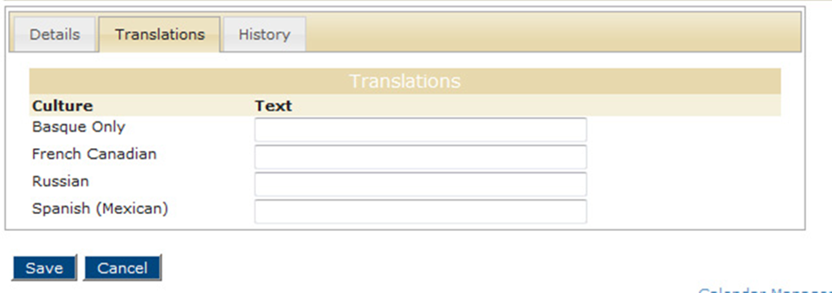
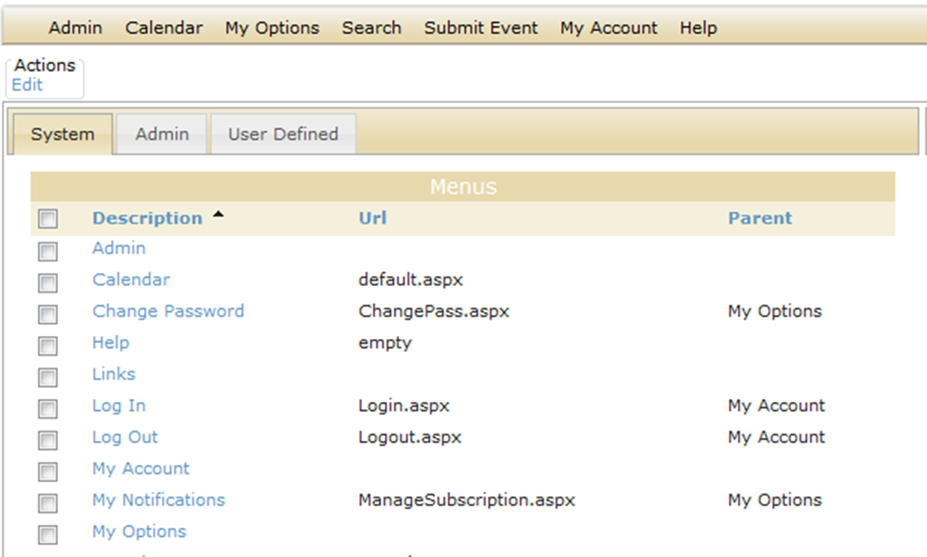

When Master Calendar is first installed, the main menu, or system menu, has a default layout as shown in the figure below. This default layout includes not only the wording that is used for the main menu options, or parent options, but also, the order of the child options on each of the menus.
Main Menu, default layout with Links parent menu activated

 | Note: The Links option is displayed on the main menu after you add user-defined child options for it. |
Example of the default Admin menu showing child menu options

You can edit the main menu by doing one or more of the following:
• Editing the text that is used for the main menu options, or system options.
• Editing the order of the options on the main menu.
• Editing the text that is used for child menu options, or system options.
• Editing the order of child menu options.
You can also add your own options, or user-defined options, to the main menu.
Managing menu options consists of editing main menu options and child menu options,adding user-defined options, editing user-defined menu options, entering translations for menu text and menu options, and deleting user-defined menu options. You can also view the history for a menu option.
1. On the Admin menu, point to Site Administration > Menus. The Menus page opens. By default, the System tab is the opened tab. All the current main menu options are displayed on this tab. This tab also lists all the child menu options that you can edit.

2. Select the main menu option or child menu option that you are editing.
3. Under Actions, click Edit. The Details tab opens. You use the options on this tab to change the description of the menu option, its position (Sequence) on the menu, or both.

4. After you make the changes to the menu option, click Save.
5. To see your change, log off the system, then log back in to the system.

A user-defined option links to a website that is outside of Master Calendar. When you add this option to the main menu, you can indicate if the website to which you are linking is to open in a new window, and if only users who log in to Master Calendar can see the option on the menu.
1. On the Admin menu, point to Site Administration > Menus. The Menus page opens on the System tab, and lists all the current main menu options plus all the child menu options.
2. Click the User Defined tab to open it. All currently active user-defined options in Master Calendar are displayed on this tab.

3. Under Actions, click Add. The Details tab opens. You use the options on this tab to specify the information for the user-defined menu option.

4. Enter the information for the user-defined menu option.
Details Tab Fields
| Field | Description |
|---|---|
| Description | The wording for the menu option. |
| Sequence | The order of the option on the menu. |
| Link | A link to an outside website. |
| Parent | The main menu option under which you are placing the user-defined option. |
| New Window | Select this option to have the website to which you are linking the option open in a new window (leaving the Master Calendar window open.) |
| Authenticated Users Only | Select this option to have only those users who have logged into Master Calendar see the link. |
5. Click Save. The Details tab closes and you return to the System tab of the Menus page.
6. Click the User Defined tab to open it and view the newly added user-defined link.

7. To see your user-defined menu option, log off the system, then log back in to the system.
1. On the Admin menu, point to Site Administration > Menus.
2. Click the User Defined tab to open it.
3. Select the menu option you wish to edit.
4. Under Actions, click Edit. The Details tab opens.
5. Edit any and all the associated information as needed.
Details Tab Fields
| Field | Description |
|---|---|
| Description | The wording for the menu option. |
| Sequence | The order of the option on the menu. |
| Link | A link to an outside website. |
| Parent | The main menu option under which you are placing this user-defined option. |
| New Window | Select this option to have the website to which you are linking the option be displayed in a new window (leaving the Master Calendar window open.) |
| Authenticated Users Only | Select this option to have only those users who have logged into Master Calendar see the link. |
6. Click Save. The Details tab closes and you return to the System tab of the Menus page.
7. To see your edited menu option, log off the system, then log back in to the system and open the User Defined tab.
If you have configured one more or more cultures for Master Calendar, then you must manually enter the corresponding translations for the main menu text and menu options, including user-defined menu options.
1. On the Admin menu, point to Site Administration > Menus. The Menus page opens on the System tab, and lists all the current main menu options plus all the child menu options.
2. If needed, open the Admin tab (lists all the Admin menu options for which you can enter translations) or User Defined tab.
3. Select the main menu text or menu option for which you are entering a translation, and then click Edit. The Details tab opens.
4. Click the Translations tab to open it. All the cultures that you have configured for Master Calendar are displayed on this page.

5. Enter the appropriate translation for every displayed culture on the page.
6. Click Save. The Translations tab closes. You return to the opened tab for the selected menu text or menu option.
| Note: A user’s or guest’s Browser language must be set to the appropriate culture (language) to display these translations after opening and/or logging in to Master Calendar. |
| Concept:[You can delete only user-defined menu options. You cannot delete a system menu option. |
1. On the Admin menu, point to Site Administration > Menus. The Menus page opens on the System tab, and lists all the current main menu options plus all the child menu options.

2. Click the User Defined tab to open it.
3. Select the menu option that you are deleting. To select all user-defined menu options on the currently opened page for deletion in a single step, select Description. If you have multiple pages of options to delete, you must repeat this entire process on each page.
4. Under Actions, click Delete. A message opens, asking you if you are sure that you want to delete all the selected menu options.
5. Click OK in the message. A message opens indicating that all the selected menu options were successfully deleted.
6. Click OK in the message. The User Defined tab is refreshed to show the remaining, if any, user-defined menu options in Master Calendar.
The history for an menu option consists of the original creation date of the option, the name of the user who created the option, and the last date that the option was edited as well as the name of the user who last edited the option. You can view the history for both system menu options and user-defined menu options.
1. On the Admin menu, point to Site Administration > Menus. The Menus page opens on the System tab.

2. If needed, click the Admin tab or the User Defined tab to open it.
3. Select the menu option for which you are viewing the history.
4. Under Actions, click Edit. The Details tab opens.
5. Click the History tab to open it and view the history for the menu option.